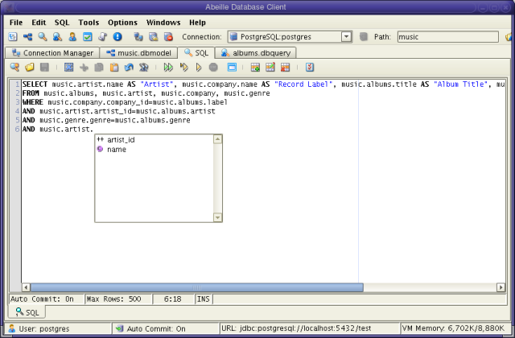
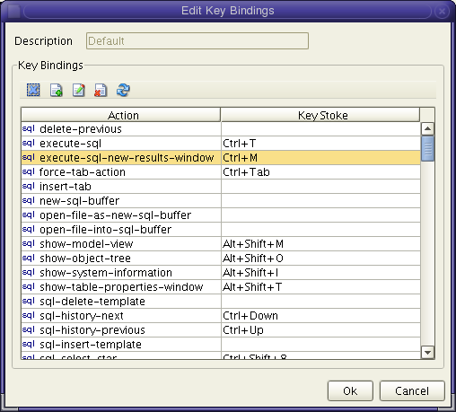
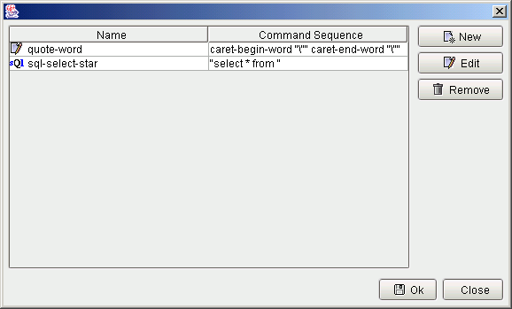
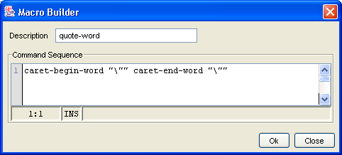

work with multiple buffers, only the SQL buffer can execute SQL commands.
SQL Editor
Abeille provides a SQL editor complete with syntax highlighting, history buffer, customizable key bindings, and macro support. Multiple files can be opened in the editor. However, only the SQL buffer can execute SQL commands. SQL from other buffers must be transferred to the SQL buffer to be executed.

| Clears the current editor of all text. | |
| Opens a file. This opens the file in another
buffer in the SQL frame. While the SQL editor allows you to work with multiple buffers, only the SQL buffer can execute SQL commands. |
|
| Saves the current file/buffer to disk. |
|
| Undo the last operation. | |
| Invokes all SQL commands in the current buffer. The default keyboard short cut for this is CTRL-T | |
| Executes all SQL statements from
the current cursor position. |
|
| Executes the SQL statement that
contains the current cursor position. |
|
| Invokes the text search dialog. |
The SQL editor supports customized key bindings as well as macros. You can invoke the SQL Preferences dialog from the Tools-Preferences menu.
You can edit the default key bindings for the supported actions in the editor. You can also create a new set of key bindings to emulate editors such as vi and emacs. You can edit the current bindings by invoking the Edit Key Bindings dialog. This dialog lists all actions in the editor. It also lists the key strokes used to invoke the action.

| Clears the key bindings for the selected action. | |
| Creates a new key binding for the selected action. This allows you to create multiple bindings for the same action. | |
| Edits the bindings for the selected action. | |
| Deletes the bindings for the selected action. This is only allowed if there are multiple bindings for the given action. If there is only one binding for the selected action, this command is disabled. | |
| Resets ALL key bindings to their default values. |
Common Default Actions
Abeille has several predefined actions that are useful in the SQL editor:
| execute-sql | executes the SQL in the SQL buffer. | CTRL+T |
| sql-history-next | inserts the next SQL statement in the history list. This allows you to scroll through SQL statements | CTRL+up arrow |
| sql-history-previous | this action inserts the previous SQL statement in the history list. | CTRL+down arrow |
| table-name-completion | displays a drop down combo box with all user tables in the system | CTRL+period |
| sql-select-star | macro that inserts the text, select * from, into the SQL buffer. | CTRL+8 |
Abeille allows you to define custom macros.

Macros are defined by creating a series of actions:
| [action 1] [action 2] ... [action N] |
Additionally, you can use the macro to insert text into the edtior:
| [action 1] “text” [action 2] |
For example, to create a macro that puts quotation marks around a word, you would enter the following in the macro editor:

| caret-begin-word "\"" caret-end-word "\"" | ||
| where: | caret-begin-word – predefined action to move the caret to the beginning of the current word. | |
| “\”” - inserts the quote character. You must use the control \ for this case | ||
| caret-end-word - predefined action to move the caret to the end of the current word. | ||
Or, you could simply insert straight text into the editor as follows (e.g. sql-select-star macro)
| "select * from" |
Once a macro has been defined, you can use the key binding editor to assign key strokes to the macro.